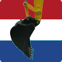

De KLIC Viewer is ontwikkeld om snel het resultaat van een KLIC melding te kunnen bekijken en begrijpen.
Het is een goed alternatief voor de gratis KLIC viewer die wordt aangeboden door het Kadaster, via https://zakelijk.kadaster.nl/klic-viewer.
Doordat deze viewer onderdeel is van een echt GIS systeem, kun je binnen deze Viewer ook afstanden opmeten en ontwerptekeningen als laag toevoegen, meerdere KLIC berichten inlezen enzovoorts.
In Gebruik wordt het gebruik van de KLIC Viewer verder uitgelegd.Eerst zal men moeten beschikken over een KLIC bericht. Het resultaat van een melding gedaan in het kader van de wet WION noemen we in het vervolg een KLIC bericht. Zie ook Over WION hoe je deze kunt verkrijgen. Wanneer je het KLIC bericht ontvangen hebt, zal het eerst een ingepakt zip-archief zijn.
De KLIC Viewer heeft drie tabbladen, Berichten, Thema's en Opties. Na het opstarten opent deze altijd eerst het tabblad Berichten want eerst dient een KLIC bericht te worden ingelezen.
Gebruik de knop [Open Folder...] wanneer u een al uitgepakt
KLIC bericht heeft. U kunt ook de Alt-toets gevolgd door de O-toets
gebruiken. Zo'n combinatie zal hierna worden afgekort tot Alt-O.
U kunt hiermee de folder selecteren die het KLIC bericht bevat.
Wanneer u in het tabblad Opties al de standaard folder heeft
ingesteld waar KLIC berichten normaal gesproken gevonden worden, dan
is deze snel gevonden.
Na selectie en op [OK] te hebben gedrukt gebeurt het volgende:
Vanaf 02/01/2019 is de levering van gegevens aanzienlijk veranderd en de opbouw van thema's is nogal ingewikkeld. Zo is de thema informatie verspreid over meerdere raster en vectorlagen. Maar elke vectorlaag bevat vaak ook informatie over meerdere thema's. Het was vrij lastig om dit onderdeel te programmeren om per thema gegevens aan en uit te zetten.
Nieuw is de toevoeging van het kunnen selecteren of Vector en Raster aan of uitgezet dient te worden. In 2019 wordt tijdelijk veel informatie dubbel aangeleverd in vector- en raster-formaat. De behoefte bestaat wellicht om ineens even alle vector- of raster-informatie uit te zetten.
U kunt het zip bestand eerst zelf uitpakken, maar u kunt ook de knop
[Open Zip-bestand...] gebruiken, of Alt-Z, de Alt-toets gevolgd
door de Z-toets.
Via deze functie kunt u het Zip-bestand selecteren die het ingepakte
KLIC bericht bevat. Na selectie pakt deze eerst het KLIC bericht uit en
laad het vervolgens in QGIS.
U hoeft per bericht deze functie slechts 1-maal te gebruiken, gebruik daarna
de functie [Open Folder...] dan wordt het KLIC bericht sneller geladen.
Wanneer de lijst met PDF Bijlagen gevuld is kunnen deze geselecteerd en
geopend worden met de knop [Open bijlage(n)]. Wanneer de lijst met
PDF bijlagen geselecteerd is, kun je door de Ctrl-toets samen met de A-toets
tegelijk in te drukken, ineens alle bijlagen selecteren en vervolgens openen
met de knop [Open bijlage(n)] of Alt-B.
Daarnaast kunt u ook een bijlage direkt openen door in
de lijst van bijlages op een bijlage te dubbelklikken.
U kunt meerdere KLIC berichten inlezen. In de lijst van geladen KLIC
berichten kiest u vervolgens het bericht waarmee u wilt gaan werken. Na
selectie zal onmiddelijk ook de lijst van bijlagen behorende bij dat bericht
worden aangepast en de lijst met thema's in het tabblad Thema's.
Met de knop [Ga Naar] of Alt-G, verplaatst u
de kaart binnen QGIS naar de grens van het gebied van het KLIC bericht.
Met de knop [Beste Schaal] of Alt-C krijgt u het bericht in de meest
perfect mogelijke weergave te zien.
Met de knop [Sluit Bericht] sluit u het bericht en de kaartlagen
zullen eveneens worden verwijderd uit QGIS.
Met de knop [Opslaan in project] konden alle gegevens in de plugin opgeslagen worden naast het huidige QGIS projectbestand. Daarvoor moest eerst wel al een opgeslagen QGIS project bestaan. Dit doet u door in het menu Bestand de optie Project opslaan te kiezen. Wanneer u vervolgens een project opent dan zal ook de informatie in de wion viewer plugin weer zichtbaar en bruikbaar zijn.
Echter om op tijd de KLIC viewer te kunnen leveren is deze functionaliteit tijdelijk niet beschikbaar.
Met de knop [Afsluiten] wordt de KLIC Viewer gesloten, maar wanneer de KLIC Viewer weer wordt geopend dan is de inhoud bewaard gebleven, m.a.w. alle instellingen worden vastgehouden.
Na het laden zijn standaard alle lagen zichtbaar, je kunt lagen onzichtbaar maken door het aankruisvakje voor de kaartlaag te deselecteren. Het kruisje verdwijnt en de geselecteerde laag is niet langer zichtbaar.
Het is ook mogelijk om per thema kaartlagen aan of uit te zetten via het tabblad Thema's.
De eerste twee letters van een laag geven aan wat voor kaartlaag dit betreft.
Het tabblad Thema's laat zien welke thema's een KLIC bericht
Bevat.
Het is tevens een legenda van de kaart, want je kunt nu zien welke kleuren gebruikt
worden voor welk thema.
Zo zie je dat blauwe lijnen gebruikt worden om de ligging van leidingen van het
Thema Water te laten zien en groene voor de ligging van kabels van
het thema Data.
Alleen actieve thema's kun je aan en uit zetten middels het aankruisvakje. Niet
alleen de ligging, maar ook de bijbehorende labels (=annotatie) en maatvoering
wordt uitgezet.
Met de knop [Ververs] Alt-V kun je de status van de aankruisvakje geforceerd bijwerken t.o.v. de zichtbare kaartlagen. Na wijzigingen vanuit de KLIC Viewer is de inhoud van Themes altijd goed, maar indien er in het Lagen panel van QGIS de zichtbaarheid wordt gewijzigd worden die wijzigingen niet automatisch overgenomen in het tabblad Thema. Je kunt vanuit dit tabblad ook de legendagroepen annotatie, maatvoering, locatie en topo ineens aan of uitzetten.
Een aankruisvakje van een thema en een legendagroep heeft drie mogelijke statussen t.a.v. de kaartlagen die ertoe behoren.
Vraag: Waarom is de lijst met bijlagen leeg wanneer ik na het opslaan
van het project, deze weer opnieuw open?
Antwoord: U had de functie [Opslaan in project] moeten gebruiken.
Daarmee word de lijst met bijlagen wel opgeslagen in een project.
Vraag: Kun je meerdere KLIC berichten inlezen?
Antwoord: Ja dat kan, alleen hou er dan rekening dat je daarna de volgorde van
tekenlagen nog moet verplaatsen wanneer twee KLIC berichten elkaar overlappen.
De meegeleverde onderliggende topo (Lagen die beginnen met GB_ zijn namelijk
niet transparant!
Vraag: Hoe kan ik een Autocad ontwerp tekening bijladen?
Antwoord: sinds QGIS 1.6.0 wordt ook het rechtsstreeks
inlezen van DXF autocad bestand als vectorlaag ondersteund.
Wanneer er een folder wordt geselecteerd die geen geldig KLIC bericht bevat,
krijg je de volgende foutmelding:
Geselecteerde folder bevat geen goed
KLIC bericht of kan niet worden geopend
Vaak blijkt er nog een folder onder de geselecteerde folder te zitten
die wel het KLIC bericht bevat.
Netbeheerders proberen al lange tijd hun kabels/leidingen te beschermen
door diegene die gaan graven te voorzien van informatie. Enkele netbeheerders
besloten een centraal aanmeldingspunt in te richten waar gravers gratis een
melding konden doen. Deze stichting zonder winstdoelmerk heette het KLIC (Kabel
en Leidingen Informatie Centrum).
Grondroerders melden bij het KLIC waar zij wilden gaan graven en het KLIC
stuurde gegevens door naar alle netbeheerders met belang, netbeheerders die
misschien leidingen en/of kabels in het gebied hebben liggen. De netbeheerder
stuurden vervolgens informatie op over de plek waar gegraven werd terug naar de
grondroerder.
Het KLIC was succesvol en men was ervan overtuigd geraakt dat hier echt
graafschade mee voorkomen werd.
Grondroerders ontvingen echter zoveel informatie dat het lastig was om om die gegevens goed te combineren. Verzekeraars keerden bij schade niet meer (zo snel) uit wanneer de grondroerder vooraf geen KLIC-melding had gedaan. Soms werd het doen van een KLIC-melding alleen nog maar gedaan om verzekerd te zijn bij graafschade en werd de informatie niet meer vooraf grondig bestudeert doordat dit te veel tijd in beslag zou nemen.
Sinds 1 oktober 2009 is de wet WION in werking getreden. Deze verplicht de grondroerder tot het doen van een graafmelding centraal bij het Kadaster. De melding is niet gratis meer, per melding wordt er een bedrag van 16 euro in rekening gebracht (peildatum januari 2019). Het Kadaster verzameld van verschillende Netbeheerders de netwerkgegevens en levert deze terug aan de grondroerder. De OPTA is de toezichthouder en deze controleert of grondroerders bij mechanische graafwerkzaamheden wel informatie aanvragen en of netbeheerders voldoen aan de verplichting om op tijd de juiste gegevens te verstrekken. De gehanteerde boetes bedragen tienduizenden euro's.
Sinds 2 januari 2019 wordt de informatie aangeleverd waarbij de informatie wordt opgeslagen in een nieuwe interne folderstructuur. Daarnaast wordt er nu ook vector informatie aangeleverd!
Er kunnen drie soorten meldingen gedaan worden, elk voor een speciaal doeleinde.
Zowel particulieren als bedrijven kunnen een graafmelding doen. Geregistreerde bedrijven kunnen dit doen via de webservice KLIC-online van het Kadaster. Bij deze dienst kun je op een interactieve kaart aangeven over welk gebied men informatie wenst te ontvangen. Na het doen van een graafmelding ontvangt de aanvrager binnen een dag een email met daarin een link naar de informatie die gedownload dient te worden. Download eerst de gegevens, die in een zip-archief zijn opgeslagen, en pak het zip-archief vervolgens uit naar een folder. U heeft slechts 5 pogingen om de gegevens op te halen! Gebruik de KLIC Viewer om het resultaat te bekijken.
Voor het testen van de KLIC Viewer kan een testmelding gedownload worden van https://github.com/kadaster/klic-win/tree/master/Uitleveren/Voorbeelden en https://github.com/kadaster/klic-win/tree/master/Uitleveren/Voorbeelden met BGT.
Licentie en gebruiksvoorwaarden
Copyright: (C) 2018 Diethard Jansen
Versie: 2.0.3
email: diethard.jansen@gmail.com
De KLIC Viewer python plugin is gratis software; U mag het verspreiden en aanpassen volgens de voorwaarden zoals vastgelegd in de General Public License die gepubliseerd is door de Free Software Foundation; Versie 2 of een latere versie is van toepassing.
Gebruik van deze software is geheel voor eigen risico.
De software is echter zorgvuldig gemaakt en ik verwacht dat
u er wel veel plezier aan zult beleven.
Hieronder ziet u een grotere versie van het gebruikte icoontje van de KLIC Viewer

Op de achtergrond is de Nederlandse driekleur te zien. Het betreft dan
ook een Viewer die vooralsnog alleen voor Nederlandse graafmeldingen
gebruikt kan worden.
Nederland loopt internationaal voorop met de uitwisseling van informatie
over ondergrondse netwerken.
Op de voorgrond zien we een bak van een hijskraan, deze staat symbool voor mechanisch graven.
Voordat er gegraven mag worden, moet de graver eerst inzicht hebben waar de leidingen en kabels zich bevinden. Voor meer informatie over de wet WION zie ook Over WION.